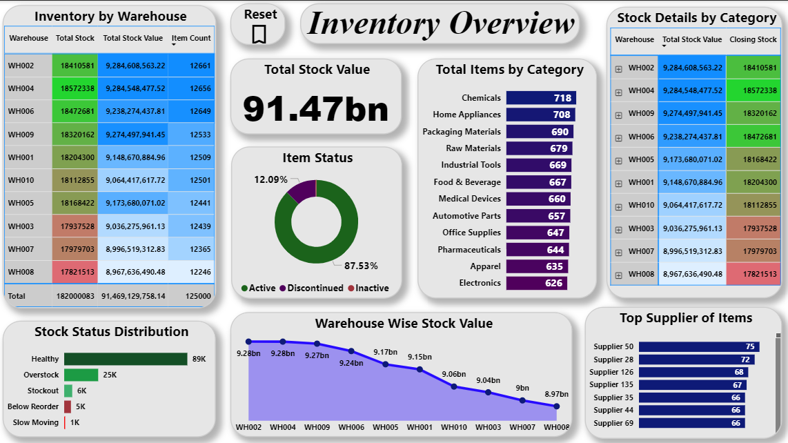
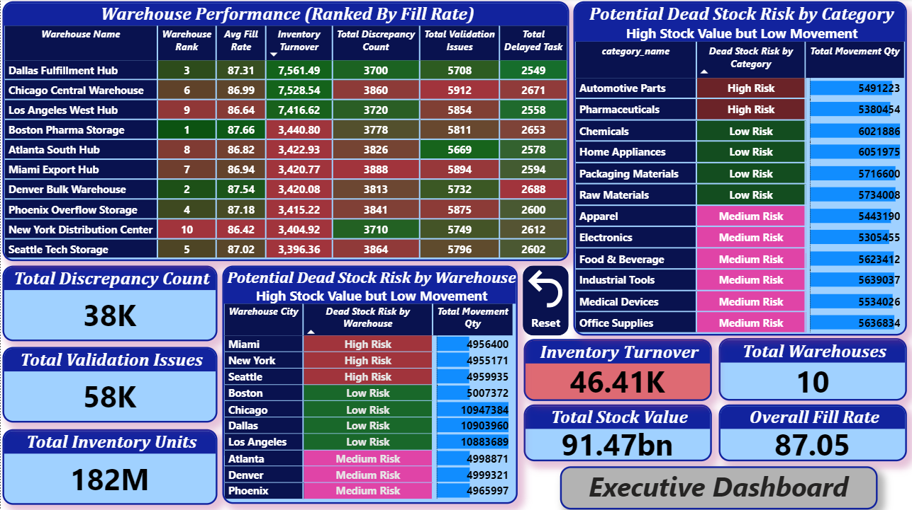
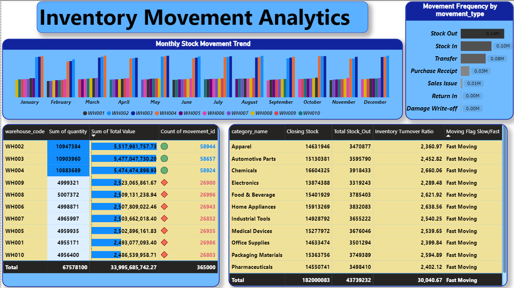
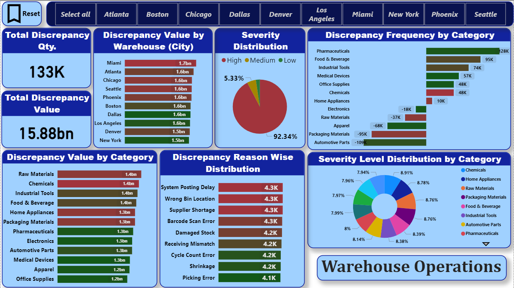
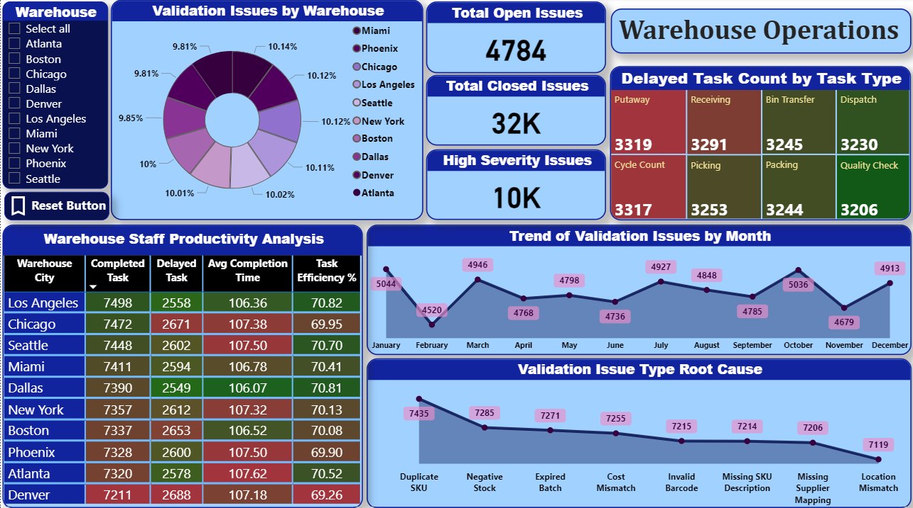
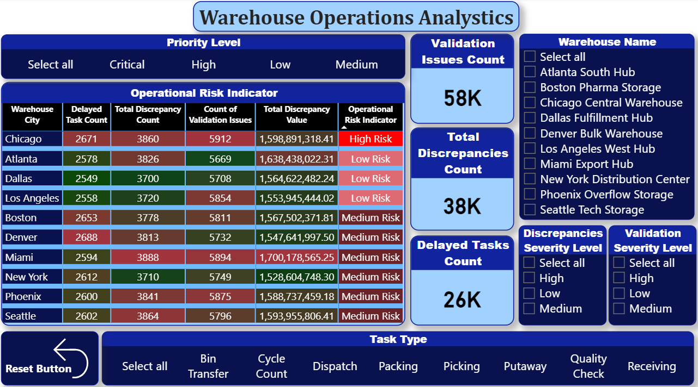
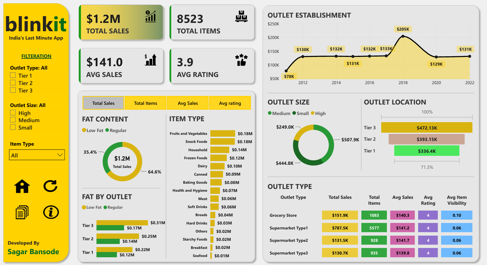
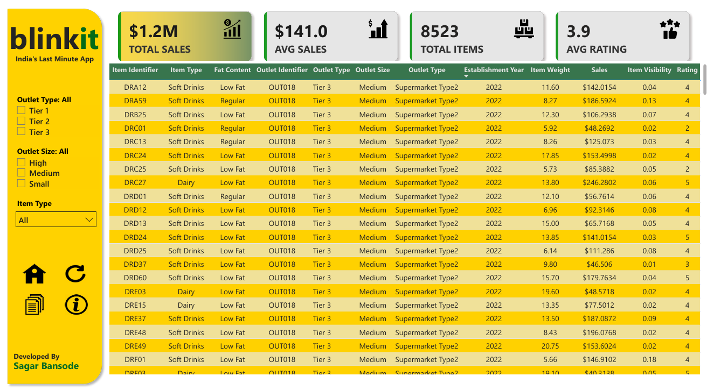

Featured Projects





Logistics & Warehouse Performance Dashboard
Power BI
DAX
Power Query
Microsoft Excel
- Designed an interactive Power BI reporting solution to monitor warehouse operations and logistics performance.
- Built reusable data models, DAX measures and Power Query transformations for data preparation and analysis.
- Developed KPI dashboards tracking Inventory Turnover, Fill Rate, Warehouse Utilization, Order Accuracy, On-Time Delivery, Average Delivery Time and Transportation Cost.
- Created drill-through reports and interactive visualizations for detailed operational analysis and performance monitoring.


Blinkit Sales Performance Dashboard
Power BI
DAX
Power Query
Microsoft Excel
- Designed an interactive Power BI dashboard to analyse Blinkit's sales performance, outlet operations and product distribution.
- Built reusable data models, DAX measures and Power Query transformations for data preparation, KPI calculation and business reporting.
- Developed interactive dashboards tracking Total Sales, Average Sales, Total Items, Customer Ratings and Outlet Performance.
- Created dynamic visualizations for Outlet Size, Outlet Location, Item Type, Fat Content and Outlet Type to support business decision-making.
- Implemented interactive filters and slicers enabling detailed analysis across outlet categories and product segments.
Inventory Management Analytics
Python
Pandas
NumPy
PostgreSQL
Matplotlib
Seaborn
- Performed Exploratory Data Analysis (EDA) using Python, PostgreSQL, Matplotlib and Seaborn.
- Cleaned, transformed and validated data using Python and SQL.
- Developed SQL queries using Joins, CTEs, Window Functions and Aggregate Functions.
- Created visualizations to identify inventory trends, warehouse performance patterns and operational bottlenecks.
Get In Touch
I'm currently open to Data Analyst opportunities. Feel free to connect with me.
📱 Phone
+91 7820816641💻 GitHub
GitHub Repository →
×